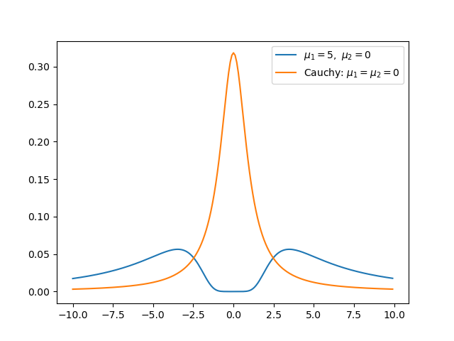

Derive the distribution of two Gaussian variables’ ratio with SymPy
Table of Contents
We know that the ratio of two Gaussian variables both with mean zero follows the Cauchy distribution, but how about the more general case?
This post serves two purposes:
- as a primitive investigation of the distribution of the ratio of two Gaussian variables;
- as an example on how to use SymPy, a free and open source alternative of Mathematica.
A key property that I’ll show in this post: the mean and variance of the ratio diverge, regardless of the two variables’ mean and variance.
Note: there’s another blog post which shows that the ratio of two Gaussian densities still being Gaussian, which is not to be confused with.
1. Standard way of deriving a ratio’s distribution
Before we get into SymPy, perhaps it’s best to do some math work on paper first. Let’s consider the ratio \(R \equiv X/Y\), and both \(X\sim \text{Normal}(\mu_1, \sigma_1^2)\) and \(Y\sim \text{Normal}(\mu_2, \sigma_2^2)\). Then, we first consider the cumulative density function (CDF) of \(R\), \(F(r)\), which consists of two parts:
\begin{equation} \label{eq:cdf-R} F(r) = P(R \leq r) = P(X \leq rY, Y>0) + P(X \geq rY, Y<0) \end{equation}and the probability density \(p(r)\) is
\begin{align} \label{eq:pdf-R} p(r) &= \frac{d}{dr} P(X \leq rY, Y>0) + \frac{d}{dr} P(X \geq rY, Y<0) \nonumber \\ &\equiv p_{+}(r) + p_{-}(r) \end{align}When \(Y>0\),
\begin{equation} \label{eq:cdf-R-pos} P(X \leq RY) = \int_0^{+\infty} p(y) \left(\int_{-\infty}^{ry} p(x) dx\right) dy \end{equation}and we’re interested in the PDF:
\begin{align} \label{eq:pdf-R-pos} p_+(r) &= \frac{d}{dr}P(X \leq RY) \\ & = \int_0^{+ \infty} p_Y(y) \left( \frac{d}{dr} \int_{-\infty}^{ry} p_X(x) dx\right) dy \nonumber \\ & = \int_0^{+\infty} y p_Y(y) p_X(ry) dy \nonumber \end{align}where we use the fact that \(\frac{d}{d(ry)} \int_{-\infty}^{ry} p_X(x) dx = p_X(ry)\).
Similarly, when \(Y<0\), we have
\begin{align} \label{eq:pdf-R-neg} p_-(r) &= \frac{d}{dr}P(X \geq RY) \\ & = \int_{-\infty}^{0} p_Y(y) \left( \frac{d}{dr} \int^{+ \infty}_{ry} p_X(x) dx\right) dy \nonumber \\ & = - \int^0_{-\infty} y p_Y(y) p_X(ry) dy \nonumber \end{align}Now we can use SymPy to analytically integrate Eqs \eqref{eq:pdf-R-pos} and \eqref{eq:pdf-R-neg}.
2. Integrating with SymPy
We first import the module and generate symbols:
from sympy import *
x, y, mu1, mu2, sig1, sig2, r = symbols("x y \mu_1 \mu_2 \sigma_1 \sigma_2 r", real=True)
Type in the Gaussian densities of \(X\) and \(Y\):
px = exp(-(x-mu1)**2 / (2 * sig1**2)) / sqrt(2 * pi) / sig1
py = exp(-(y-mu2)**2 / (2 * sig2**2)) / sqrt(2 * pi) / sig2
Integrate Eqs \eqref{eq:pdf-R-pos} and \eqref{eq:pdf-R-neg}:
# substitute ry into px first
px_ry = px.replace(x, r*y)
pr_pos = integrate(y * px_ry * py, (y, 0, oo))
pr_neg = integrate(-y * px_ry * py, (y, -oo, 0))
If we check the results now, it will look ugly, because (1) we haven’t simplified it, and (2)
the results consider also the case in which variables or the square root are complex numbers.
So I need to select the case of interest with args, replace the polar_lift function with the Id (identity) function and simplify the expression:
pr_pos = simplify(pr_pos.args[0][0].replace(polar_lift, Id))
pr_neg = simplify(pr_neg.args[0][0].replace(polar_lift, Id))
pr = simplify(pr_pos + pr_neg)
print(latex(pr))
Now the get the expression of \(p(r)\):
\begin{align} \label{eq:pr} p(r) &= \frac{\sqrt{2}}{2 \pi \sigma_{1} \left(\sigma_{1}^{2} + \sigma_{2}^{2} r^{2}\right)^{\frac{3}{2}}} e^{- \frac{\mu_{1}^{2} \sigma_{2}^{2} + \mu_{2}^{2} \sigma_{1}^{2}}{2 \sigma_{1}^{2} \sigma_{2}^{2}}} \\ & \times \Bigg[\sqrt{2} \sigma_{1}^{2} \sigma_{2} \sqrt{\sigma_{1}^{2} + \sigma_{2}^{2} r^{2}} \nonumber \\ & + \sqrt{\pi} \left(\mu_{1} \sigma_{2}^{2} r + \mu_{2} \sigma_{1}^{2}\right) e^{\frac{\left(\mu_{1} \sigma_{2}^{2} r + \mu_{2} \sigma_{1}^{2}\right)^{2}}{2 \sigma_{1}^{2} \sigma_{2}^{2} \left(\sigma_{1}^{2} + \sigma_{2}^{2} r^{2}\right)}} \left|{\sigma_{1}}\right| \operatorname{erf}{\left(\frac{\sqrt{2} \left(\mu_{1} \sigma_{2}^{2} r + \mu_{2} \sigma_{1}^{2}\right) \left|{\sigma_{1}}\right|}{2 \sigma_{1}^{2} \sigma_{2} \sqrt{\sigma_{1}^{2} + \sigma_{2}^{2} r^{2}}} \right)}\Bigg] \nonumber \end{align}It is best to check if \(p(r)\) is a Cauchy distribution when \(\mu_1 = 0\) and \(\mu_2 = 0\):
print(latex(simplify(pr.subs({mu1:0, mu2:0}))))
which prints
\begin{equation} \label{eq:cauchy} \frac{\sigma_{1} \sigma_{2}}{\pi \left(\sigma_{1}^{2} + \sigma_{2}^{2} r^{2}\right)} \end{equation}as expected.
We can also numerically check whether \(p(r)\)’s integral is 1, given the \(\mu\)’s and \(\sigma\)’s:
from scipy.integrate import quad
import numpy as np
# substitute parameters into p(r)
pr_subs = pr.subs({sig1:1, sig2:1, mu1:1, mu2:-1})
# make it a proper python function that takes one argument, r
pr_subs = lambdify((r,), pr_subs)
# numerically integrate
intg, _ = quad(pr_subs, -np.inf, np.inf)
print(intg)
3. Properties of \(p(r)\)
\(p(r)\) is even when \(\mu_1 = 0\):
print(latex(simplify(pr.subs({mu1:0}))))
which gives
\begin{align} \label{eq:pr-mu1-zero} p(r) & = \frac{\sigma_{1}}{2 \pi \left(\sigma_{1}^{2} + \sigma_{2}^{2} r^{2}\right)^{\frac{3}{2}}} e^{- \frac{\mu_{2}^{2}}{2 \sigma_{2}^{2}}} \\ & \times \Bigg[\sqrt{2\pi} \mu_{2} e^{\frac{\mu_{2}^{2} \sigma_{1}^{2}}{2 \sigma_{2}^{2} \left(\sigma_{1}^{2} + \sigma_{2}^{2} r^{2}\right)}} \left|{\sigma_{1}}\right| \operatorname{erf}{\left(\frac{\sqrt{2} \mu_{2} \left|{\sigma_{1}}\right|}{2 \sigma_{2} \sqrt{\sigma_{1}^{2} + \sigma_{2}^{2} r^{2}}} \right)} \nonumber \\ & + 2 \sigma_{2} \sqrt{\sigma_{1}^{2} + \sigma_{2}^{2} r^{2}}\Bigg] \nonumber \end{align}because all terms of \(r\) is in the form of \(r^2\).
The expression does not seem to be even at first sight when \(\mu_2 = 0\):
print(latex(simplify(pr.subs({mu2:0}))))
but it is even — because the first term within the square bracket can be written as \(g(f) \propto f \cdot \mathrm{erf}(f)\), which is even, and \(f(r) \propto \frac{r}{\sqrt{\sigma_1^2 + \sigma_2^2 r^2}}\), which is odd. The composition of an even function with an odd function is even. We can plot the graph to see the symmetry:
import matplotlib.pyplot as plt
x = np.arange(-10, 10, 0.1)
pr_subs = lambdify((r,), pr.subs({sig1:1, sig2:1, mu1:5, mu2:0}))
pr_subs_cauchy = lambdify((r,), pr.subs({sig1:1, sig2:1, mu1:0, mu2:0}))
y = pr_subs(x)
y_cauchy = pr_subs_cauchy(x)
plt.figure()
plt.plot(x,y,label="$\mu_1 = 5,\ \mu_2 = 0$")
plt.plot(x,y_cauchy,label="Cauchy: $\mu_1 = \mu_2 = 0$")
plt.legend()
plt.show()

We know that when \(\mu_1 = 0\) and \(\mu_2 = 0\), \(p(r)\) is a Cauchy distribution, whose mean and variance diverge. Below I show that the mean and variance diverge for any real values of \(\mu_1\) and \(\mu_2\).
Proof:
To prove that the variance diverges, we only need to prove that the mean diverges. To prove \(\int_{-\infty}^{+ \infty} r p(r) dr\) diverge, we only need to prove \(\int_1^{+\infty} r p(r) dr\) diverge.
The second term within the square bracket of Eq \eqref{eq:pr}
\begin{equation} \label{first-term} \sqrt{\pi} \left(\mu_{1} \sigma_{2}^{2} r + \mu_{2} \sigma_{1}^{2}\right) e^{\frac{\left(\mu_{1} \sigma_{2}^{2} r + \mu_{2} \sigma_{1}^{2}\right)^{2}}{2 \sigma_{1}^{2} \sigma_{2}^{2} \left(\sigma_{1}^{2} + \sigma_{2}^{2} r^{2}\right)}} \left|{\sigma_{1}}\right| \operatorname{erf}{\left(\frac{\sqrt{2} \left(\mu_{1} \sigma_{2}^{2} r + \mu_{2} \sigma_{1}^{2}\right) \left|{\sigma_{1}}\right|}{2 \sigma_{1}^{2} \sigma_{2} \sqrt{\sigma_{1}^{2} + \sigma_{2}^{2} r^{2}}} \right)} \geq 0 \end{equation}because \(z \cdot \mathrm{erf}(Az) \geq 0\) for any real \(z\) when \(A > 0\), and here \(z = \mu_1 \sigma_2^2 r + \mu_2 \sigma_1^2\). Thus, given \(r \geq 1\),
\begin{align} \label{first-term-2} r p(r) & \geq r \frac{2 \sigma_{1}^2 \sigma_{2} \sqrt{\sigma_{1}^{2} + \sigma_{2}^{2} r^{2}}}{2 \pi \sigma_1 \left(\sigma_{1}^{2} + \sigma_{2}^{2} r^{2}\right)^{\frac{3}{2}}} e^{- \frac{\mu_{1}^{2} \sigma_{2}^{2} + \mu_{2}^{2} \sigma_{1}^{2}}{2 \sigma_{1}^{2} \sigma_{2}^{2}}} \\ & = r \frac{\sigma_{1} \sigma_{2}}{\pi \left(\sigma_{1}^{2} + \sigma_{2}^{2} r^{2}\right)} e^{- \frac{\mu_{1}^{2} \sigma_{2}^{2} + \mu_{2}^{2} \sigma_{1}^{2}}{2 \sigma_{1}^{2} \sigma_{2}^{2}}} \nonumber \\ & \equiv g(r) \nonumber \end{align}and \(\int_1^{+\infty} g(r) dr\) diverges, so \(\int_1^{ +\infty} r p(r) dr\) diverges, by the direct comparison test for improper integrals. \(\blacksquare\)
I was hoping to get the mean of the ratio of, say, \(X \sim \textrm{Normal}(0, 1)\) and \(Y \sim \textrm{Normal}(10, 1)\), which seems benign because the distribution of the denominator \(Y\) is far away from zero. Yet, now I know that is impossible.